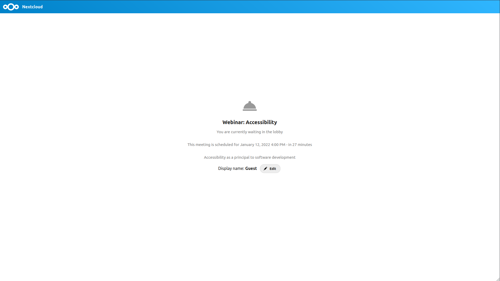
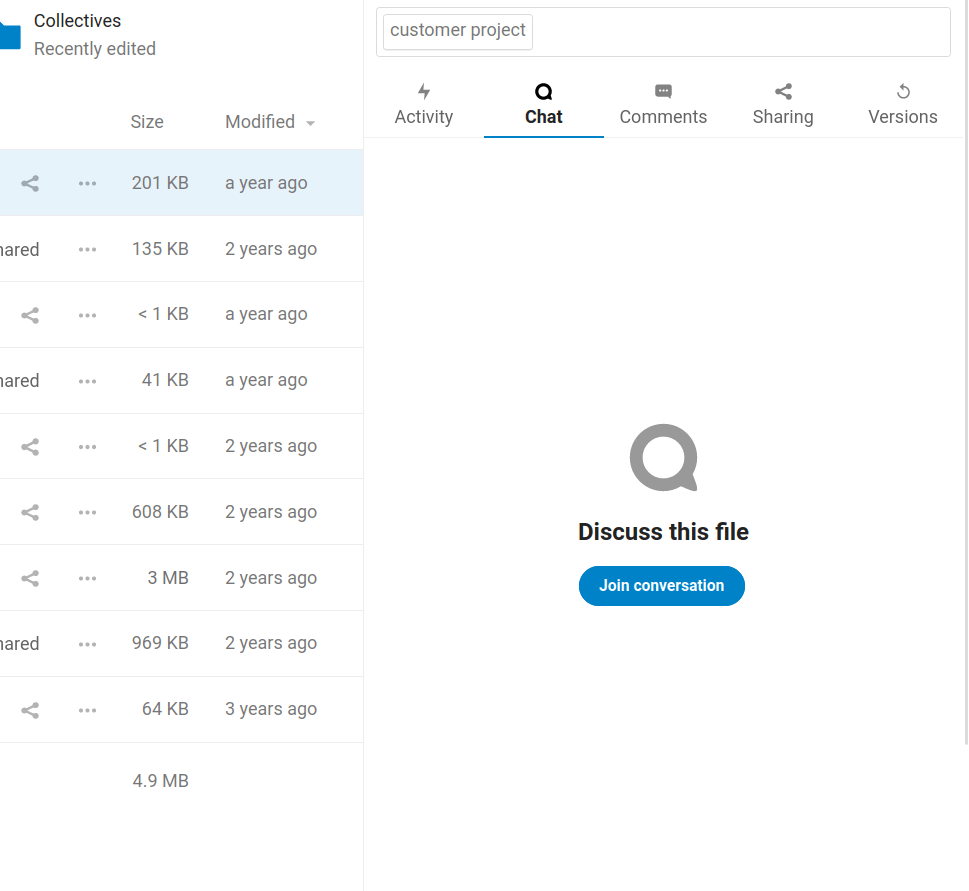
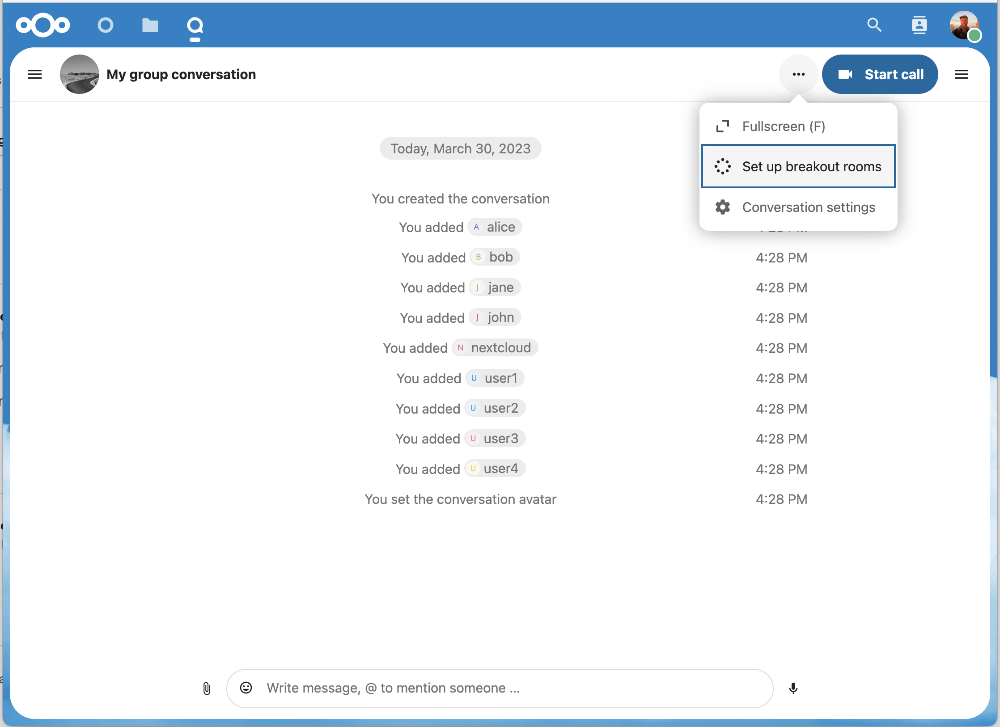

Funciones avanzadas de Talk
Nextcloud Talk tiene una serie de funciones avanzadas que los usuarios pueden encontrar útiles.
Matterbridge
La integración de Matterbridge en Nextcloud Talk hace posible crear “puentes” entre las conversaciones de Talk y las conversaciones en otros servicios de chat como MS Teams, Discord, Matrix y otros. Puede encontrar una lista de protocolos compatibles en la página de github de Matterbridge.
Un moderador puede agregar una conexión de Matterbridge en la configuración del chat.

Cada uno de los puentes tiene su propia necesidad en términos de configuración. La información para la mayoría de ellos está disponible en la wiki de Matterbridge y se puede acceder a ella detrás del menú más información en el menú .... También puedes acceder a la wiki directamente.
Vestíbulo
La función de vestíbulo le permite mostrar a los huéspedes una pantalla de espera hasta que comience la llamada. Esto es ideal para seminarios web con participantes externos, por ejemplo.
Puede optar por permitir que los participantes se unan a la llamada en un momento específico o cuando cierre el vestíbulo manualmente.
Comandos
Nextcloud permite a los usuarios ejecutar acciones mediante comandos. Por lo general, un comando se ve así:
/wiki aviones
Los administradores pueden configurar, habilitar y deshabilitar comandos. Los usuarios pueden utilizar el comando help para averiguar qué comandos están disponibles.
/help

Encuentra más información en la documentación de administración de Talk.
Talk desde Archivos
En la aplicación Archivos, puede conversar sobre archivos en la barra lateral e incluso realizar una llamada mientras los edita. Primero tienes que unirte al chat.

Luego puedes chatear o hacer una llamada con otros participantes, incluso cuando comiences a editar el archivo.

En Talk, se creará una conversación para el archivo. Puedes chatear desde allí o volver al archivo usando el menú ... en la parte superior derecha.

Crea tareas desde el chat o comparte tareas en el chat
Si Deck está instalado, puede usar el menú ... de un mensaje de chat y convertir el mensaje en una tarea de Deck.


Desde Deck, puede compartir tareas en conversaciones de chat.


Salas de grupos
Las Salas de Grupos le permiten dividir una llamada de Nexcloud Talk en grupos más pequeños para discusiones más focalizadas. El moderador de la llamada puede crear múltiples salas de grupos y asignar participantes a cada una.
Configurar las salas de grupos
Para crear salas de grupos, debe ser un moderador en una conversación de grupo. Haga click en el menú de la barra superior y haga click en «Configurar salas de grupos».
Se abrirá un dialogo donde podrá especificar el número de salas que quiere crear y el método de asignación de los participantes. Aquí, se le presentarán 3 opciones:
Asignar participantes automáticamente: Talk asignará automáticamente a los participantes a las salas.
Asignar participantes manualmente: Navegará a través de un editor de participantes donde podrá asignar a los participantes a las salas.
**Permitir a los participantes elegir»: Los participantes podrán unirse a las salas de grupo por su cuenta.

Administrar salas de grupos
Una vez que las salas de grupos han sido creadas, podrá verlas en la barra lateral.

Desde la cabecera de la barra lateral
Iniciar o detener las salas de grupos: Esto moverá a todos los usuarios en la conversación maestra hacia sus salas de grupo respectivas.
Difundir mensaje a todas las salas: esto enviará un mensaje a todas las salas al mismo tiempo.
Hacer cambios a los participantes asignados: esto abrirá el editor de participantes donde podrá cambiar qué participantes están asignados a cual sala de grupo. Desde este diálogo también es posible borrar las salas de grupos.

Desde el elemento de salas de grupo en la barra lateral, podrá unirse a una sala de grupo particular o enviarle un mensaje a una sala específica.